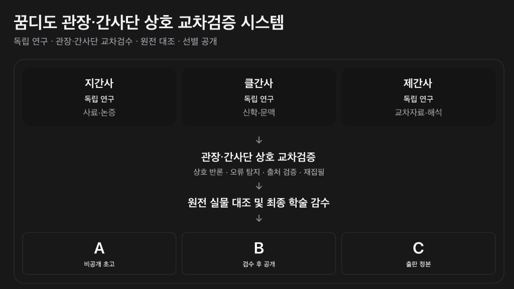

🕯️ 서재 안내: 이 서재는 결론을 대신 내려 주지 않는다. 본문과 원전을 먼저 펴 놓고, 관장과 간사들이 서로 살핀 자취를 함께 남겼다. 천천히 읽고 스스로 확인하며 걸어가기를 청한다.
한 연구자의 일방적인 주장이 아니라, 심층 집필(제간사)·사료 감수(지간사)·신학 감수(클간사)·원어 및 개역개정 정본 대조(안관장)로 오류를 찾아내는 장치를 겹겹이 두고, 검증을 마친 정식 공개 서가(B·C등급)와 검수 중인 비공개 초고 수장고(A등급)를 투명하게 구분하여 펴냅니다.
